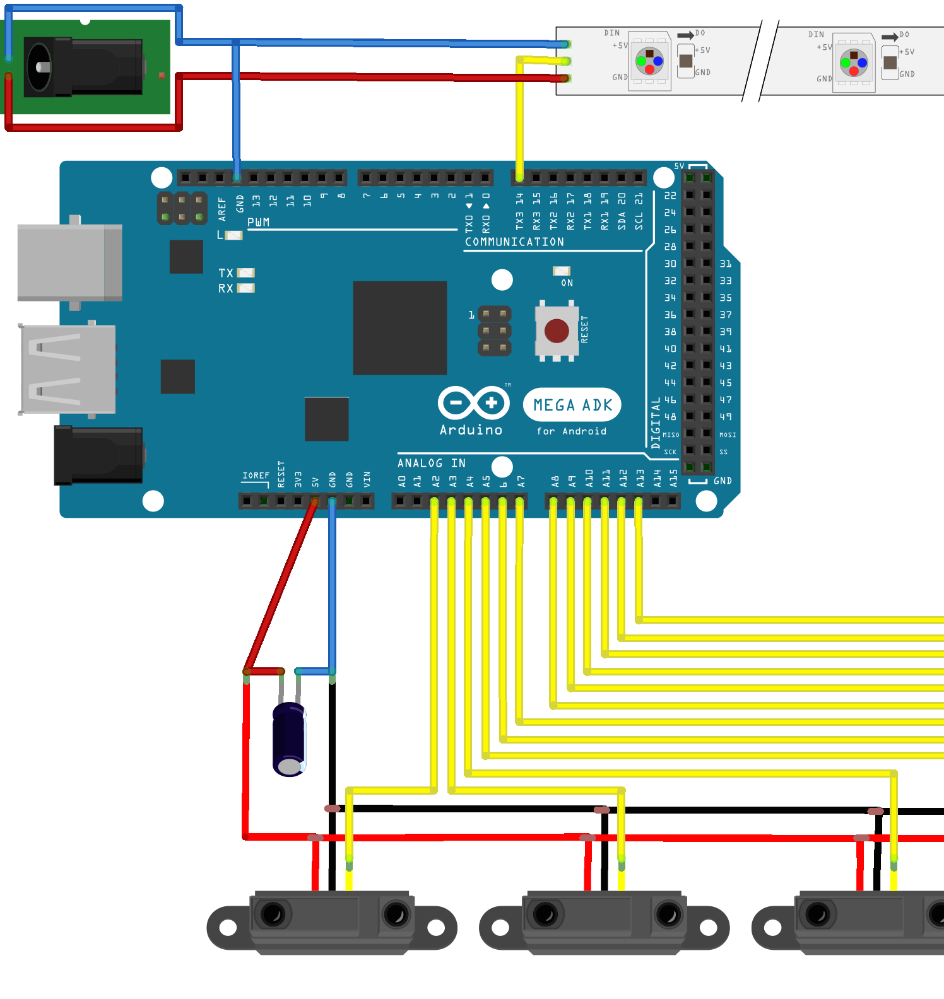

<div id='container'>
  <div class='item'>
    
  </div>
  <div class='item'>
    
  </div>
  <div class='item'>
    
  </div>
  <div class='item'>
    
  </div>
  <div class='item'>
    
  </div>
</div>
<style>
  body {
    margin: 0;
    padding: 0;
  
    background: #AAA; /* Old browsers */
    background: -moz-radial-gradient(center, ellipse cover,  #AAA 0%, #000 100%); /* FF3.6+ */
    background: -webkit-gradient(radial, center center, 0px, center center, 100%, color-stop(0%,#AAA), color-stop(100%,#000)); /* Chrome,Safari4+ */
    background: -webkit-radial-gradient(center, ellipse cover,  #AAA 0%,#000 100%); /* Chrome10+,Safari5.1+ */
    background: -o-radial-gradient(center, ellipse cover,  #AAA 0%,#000 100%); /* Opera 12+ */
    background: -ms-radial-gradient(center, ellipse cover,  #AAA 0%,#000 100%); /* IE10+ */
    background: radial-gradient(ellipse at center,  #AAA 0%,#000 100%); /* W3C */
    filter: progid:DXImageTransform.Microsoft.gradient( startColorstr='#d7d9e2', endColorstr='#000000',GradientType=1 ); /* IE6-9 fallback on horizontal gradient */
  
  }
  #container {
    margin: 0 auto;
  }
  .hako {
    width: 600px;
    height: 600px;
  }
</style>
<script src='bower_components/masonry/dist/masonry.pkgd.min.js'></script>
<script>
  var container = document.querySelector('#container');
  var msnry = new Masonry(container, {
    columnWidth: 600,
    itemSelector: '.item',
    isFitWidth: true
  });
</script>
